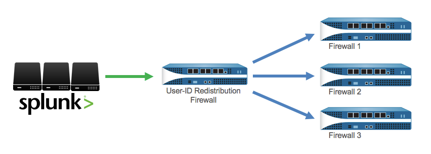

User-ID with Splunk
The Palo Alto Networks firewall will inform Splunk of the user generating each connection or event via the syslogs it sends to Splunk. This assumes that the firewall is getting the login information from AD or some other authentication system, to know what user is logged into the device generating the traffic.
Often a system like a RADIUS server sends authentication logs to Splunk to be indexed. When these logs arrive at Splunk, Splunk can synchronize with the firewall the knowledge of where users logged in. This keeps the firewall's User-ID up to date for policy enforcement and monitoring. There are two ways to synchronize user-id information to the firewall, depending on how your authentication logs are formatted in Splunk.
Sync user login events with User-ID
The Palo Alto Networks firewall will inform Splunk of the user generating each connection or event via the syslogs it sends to Splunk. This assumes that the firewall is getting the login information from AD or some other authentication system, to know what user is logged into the device generating the traffic.
If authentication logs are being indexed by Splunk, then Splunk can synchronize knowledge of where users are logged in with the firewall. For example, if Splunk is receiving a radius authentication log where 'user' is the field containing the user who authenticated, and 'ip' is the field containing the IP address where the user logged in, then you can map the user to the ip on the firewall.
In this situation, it is often preferred to use Splunk syslog forwarding to a User-ID agent or firewall because it is more efficient. But there are some cases where the user and IP are not in the same log. For example, if an authentication log contains the user and MAC address, and the DHCP log contains the MAC address and IP. A correlation must be done on the MAC address to know which IP the user logged in from. In this situation, the panuserupdate command is the preferred solution.
See also:
- Searchbar Command: panuserupdate
Method 1: Splunk Forwarding
This is the recommended method.
When Splunk receives authentication logs from an external system (like a RADIUS server), forward the authentication logs from Splunk to a User-ID Agent or User-ID Firewall. The logs must contain both the user and the IP address where they logged in/out.
This method is recommended because it is more efficient.
Step 1: Configure log forwarding on Splunk http://docs.splunk.com/Documentation/Splunk/6.3.0/Forwarding/Forwarddatatothird-partysystemsd
Step 2: Configure syslog receiving on User-ID firewall/agent https://www.paloaltonetworks.com/documentation/70/pan-os/pan-os/user-id/configure-user-id-to-receive-user-mappings-from-a-syslog-sender.html
Method 2: Searchbar Command
Use the panuserupdate command that is included with the app.
For this method, the logs are not required to contain both the user and ip in the same log. For example, where there is an authentication log with user and MAC address, and a DHCP log with MAC address and IP address. Splunk can do a search correlating the user to the IP using the MAC as the common value, then pass the search results to the panuserupdate command which will update the mapping on the firewall.
See panuserupdate in the Searchbar Command documentation.
More Information: Distribute User-ID
To simplify administration, you can configure one firewall to be the redistribution firewall that collects all the mapping information and shares it with other firewalls. You configure the receiving firewalls to retrieve the mapping information from the redistribution firewall.

Configure a Firewall to Share User Mapping Data with Other Firewalls https://www.paloaltonetworks.com/documentation/70/pan-os/pan-os/user-id/configure-a-firewall-to-share-user-mapping-data-with-other-firewalls.html